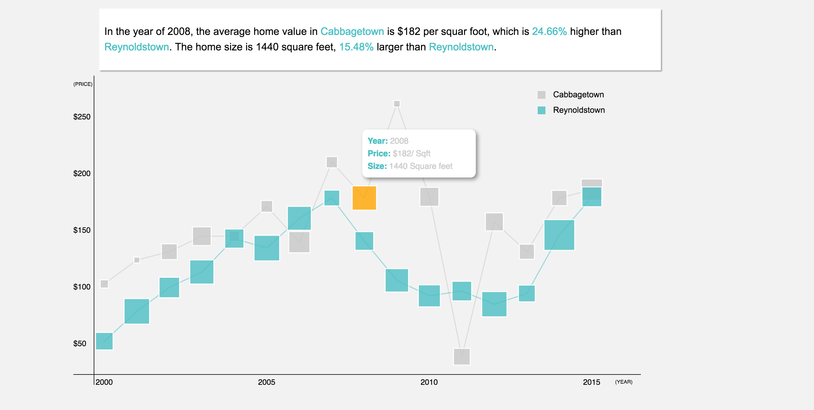

The Impact of Gentrification on People’s Living Space in Atlanta
Website Design | Data Visualization
In this project, I am focusing on housing price Vs. unit size in two adjacent neighbourhoods in Atlanta. One is Cabbagetown and the other is Reynoldstown. According to U.S. Census data, these two neighborhoods have dramatically different demographics. Meanwhile, the size of houses in both neighborhoods are also different.

What am I doing?
In this case, I started thinking about the impact of gentrification in these neighborhoods and exploring its relationship with market price and unit size.
How do I make it?
In order to answer the question: how does gentrification look like in these two neighborhood? I started by answering another question: what is the key indicator of gentrification? According to Wikipedia, it is a trend in urban neighborhood resulting in increased property values.
After figuring out gentrification, I went out to collect data I need. I had two kinds of data to be collected. One is the market price history of both neighborhoods and the other is the median unit size. First, I went to Trulia for price history from 2000 to 2015. Due to the size variations between units, I chose dollar per square foot ($/Sqft) as the price to be compared. After that, I went to U.S. Census to collect home size data. I picked the median property size because it reflects the mainstream housing trend in each neighborhood, which makes more sense than average property size.
How do I design the website?
I decided to have three sections in this project. On the first page, I decided to include general introduction on what gentrification is, what my assumption is, and how do I plan on testifying it? On the second page, my approach is in there. I chose D3 as the visualization tool to explore the trend of market property price change in line charts as well as the property size in rects. The lines represent the price change year over year. At each dot, I put a rectangular to show the property size in each year. On the last page, I decided to include findings and conclusions based off of the visualization.

What has been left?
I considered only two neighborhoods in this project, which is not enough to draw a convincing conclusion. However, collecting data is not easy at all and some data are missing in other adjacent neighborhoods. Maybe later on, I could try to get more detailed data from other sources and make my conclusion more convincing.
Moreover, I took the median property size to compare the two neighborhoods, which is ok at the moment. However, if I would like to go further and get more details, maybe I need to think about different classes in this two neighborhoods and various property types rather than just median ones.